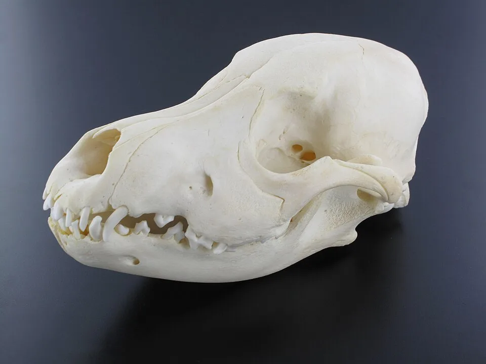

Dentición permanente del perro
Localiza los dientes en el cráneo completo y compara después el exterior de un colmillo con su corte longitudinal.
Cómo orientarse en el cráneo
El perro tiene normalmente 20 dientes superiores y 22 inferiores. En el sistema Triadan modificado, el primer dígito indica el cuadrante del paciente. El 1 corresponde al superior derecho, el 2 al superior izquierdo, el 3 al inferior izquierdo y el 4 al inferior derecho. Los dos dígitos siguientes indican la posición desde la línea media. Por ejemplo, 104 y 204 son los colmillos superiores derecho e izquierdo.
Abrir el cráneo interactivo en Odontología · Consultar la tabla del American Veterinary Dental College

Fotografía de un cráneo canino. Sigue la arcada superior desde los incisivos hacia los dientes posteriores. Observa cómo cambia el perfil de las coronas.
Fotografía de Creative Tools AB (2010). La versión de Wikimedia incorpora la edición de Ainali. Vetic redujo el tamaño y convirtió la imagen a WebP. Original del autor · Ficha de la fotografía · Licencia CC BY 2.0.

De la tomografía al cráneo interactivo
El cráneo y la mandíbula proceden de la tomografía de alta resolución del beagle 015_C_BEAG. Vetic separó las dos superficies óseas, redujo el número de polígonos y señaló las coronas sobre el mismo ejemplar. El color y el movimiento de apertura son ayudas didácticas. La actividad permite reconocer la dentición visible de este individuo.
Datos de E. Kubinyi, K. Czeibert, G. Nagy, T. Csörgő, T. Donkó, Ö. Petneházy, Á. Csóka, L. Z. Garamszegi y N. Kolm (2024), publicados con licencia CC0. Volúmenes tomográficos originales · Ficha de los especímenes · CC0 1.0.
Del cráneo al colmillo en corte
El colmillo de la sala es una reconstrucción didáctica. La corona se estrecha hacia la cúspide. La raíz se prolonga desde el cuello del diente hasta el ápice. El corte del modelo permite seguir la cavidad pulpar hacia el conducto radicular.
¿Cuántas raíces esperarías en el colmillo y en el cuarto premolar superior?
En la dentición permanente del perro, el canino maxilar suele tener una raíz y el cuarto premolar maxilar suele tener tres. Para observar las raíces de un paciente se utilizan radiografías intraorales.
En la numeración Triadan modificada, el canino maxilar derecho es 104 y el izquierdo 204. El cuarto premolar maxilar corresponde a 108 y 208, respectivamente.
Referencias para el estudio
- Soukup y colaboradores estudiaron la geometría de diez caninos maxilares maduros mediante microtomografía. Estudio morfológico del canino maxilar en el perro.
- En el monitor del Box 01 se representan los 20 dientes del maxilar permanente del perro. Los colmillos 104 y 204 aparecen en ocre. Numeración dental Triadan del AVDC · Nomenclatura del AVDC.
- La guía de la WSAVA describe la anatomía radicular de la dentición permanente canina. World Small Animal Veterinary Association Global Dental Guidelines.
- La AAHA explica el uso de la exploración oral y la radiografía en perros y gatos. Guía de atención dental de la AAHA.